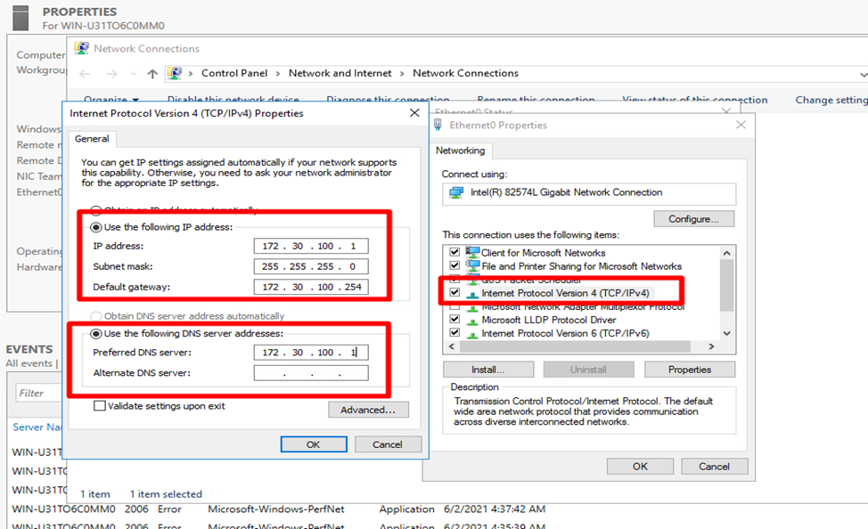

Далее
выбрать уровень работы леса и домена,
задать криптостойки пароль для базы
данных
Далее
выбрать уровень работы леса и домена,
задать криптостойки пароль для базы
данных
Microsoft Certified
|
|
Microsoft Learn | Microsoft Docs
|
|
|
|
Первым этапом необходимо сделать базовую конфигурацию, а именно переименовать сервер для корректного инфицирование в сети.
В оснастке server manager переходим на вкладку local server в Computer name. Указываем имя, которое нам необходимо
Далее нам необходимо настроить время на сервере и часовой пояс. на вкладку local server выбираем пункт time zone.
Настройка сетевого интерфейса на сервере.
Назначение статических сетевых настроек по протоколу TCP/IPv4

Установка и настройка ролей осуществляется на в кладке Manage также есть возможность управлениями несколькими удаленными серверами.
Установка роли осуществляется отметкой в check box при выборе роли есть краткое описание ее назначения
В ходе установки и настройки может понадобиться перезагрузка при установке отметки сервер это сделает в автоматическом режиме
После установки роли необходимо ее настроить, а именно указать имя нового домена и создать лес.
Далее
выбрать уровень работы леса и домена,
задать криптостойки пароль для базы
данных
Перед завершение настроек сервер автоматически произведет валидацию конфигурации и даст рекомендации
В ходе завершения настройки сервер автоматически перезагрузиться

Необходимо также до конфигурировать DNS сервер. Создать обратную зону и добавить запись при необходимости
Создаем новую primary zone
Выбираем протокол для короткорого будет создана обратная зона IPv4.
Заполняем 3 октета необходимой подсети
В прямой зоне выбираем запись типа А и добавляем ее в PTR

Базовая конфигурация DNC закончена и можно проверить работоспособность используя команду nslookup
Установка роли DHCP производиться по аналогии с AD DS

Также указываем что бы сервер перезагрузился в автоматическом режиме если в этом будет необходимость
В ходе до настройки необходимо указать пользователя под которым будет авторизирован сервер DHCP
Создание нового DHPC scope
Задаем имя для DHPC scope
Задаем диапазон адресов которые будут выдавать DHPC scope и маску подсети
Продолжим в оснастки автоматически конфигурировать дополнительные опции к DHPC scope если в этом есть необходимость
Зададим default gateway для нашей подсети которая является опцией 003
Автоматически определиться DNS Domain Name опция 015 и адрес DNS сервера опция 006
Если все конфигурации правильные по завершению всех настроек можно указать отметку на yes после чего DHPC scope будет включен и начнет свою работу
В качестве проверки можно зайти на клиента и при помощи команды ipconfig /all убедится в том что мы получили адрес по IPv4 с правильными опциями
Добавление компьютера в домен
Работа с AD DS создание OU для распределения иерархичного хранения
Создание группы безопасности для пользователей
Создание пользователя для аутентификации на хосте ESXi и клиентской машине
Добавление пользователя в группу безопастности
Создание и редактирование групповой политики для добавление группы безопасности на локальный компьютер
Политика применяемая к компьютеру
Добавление группы безопасности в локальную группу
Назначение действие политики по таргету
Добавление компьютера на который действую политика
Проверка на клиенте
Настройка роли iSCSI для начало необходимо создать в DNS запить типа А с именем хоста ESXi
Автоматически определиться DNS Domain Name опция 015 и адрес DNS сервера опция 006
Если все конфигурации правильные по завершению всех настроек можно указать отметку на yes после чего DHPC scope будет включен и начнет свою работу
В качестве проверки можно зайти на клиента и при помощи команды ipconfig /all убедится в том что мы получили адрес по IPv4 с правильными опциями
Установка роли iSCSI на сервере
Создание iSCSI таргита и виртуального диска для хоста ESXi
Указание директории для хранение виртуального диска iSCSI
Указание имени виртуального диска
Указание размера и типа хранения
Создание нового таргета для подключения
Тип и способ подключения для хостов
Установка роли AD CS производится аналогично как и AD DS и будет служить для выдачи сертификатов
При установки роли установим так же дополнительно Web Enrollment для подписи запросов через браузер
Будем использовать Enterprise CA для связки с доменам и доступу к распространению шаблонов внутри домена
Тип центра сертификации будет корневым
Сказываем срок жизни корневого сертификата